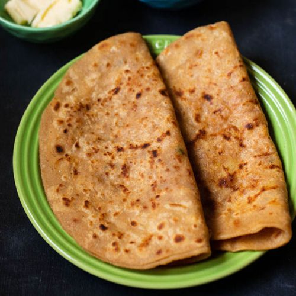

Paratha

Description
Parathas are traditional Tibetan steamed dumplings.
Very easy to make and disappear quickly!
Ingredients
- Flour
- Onions
- Potato
- Salt
- Oil
Steps
- knead the doh.
- mash the boiled potatoes
- Make balls of doh with potatoes inside
- Make flatbreads and apply the necessary oil.